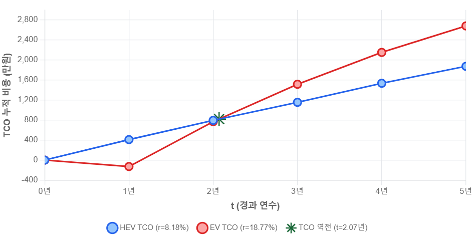
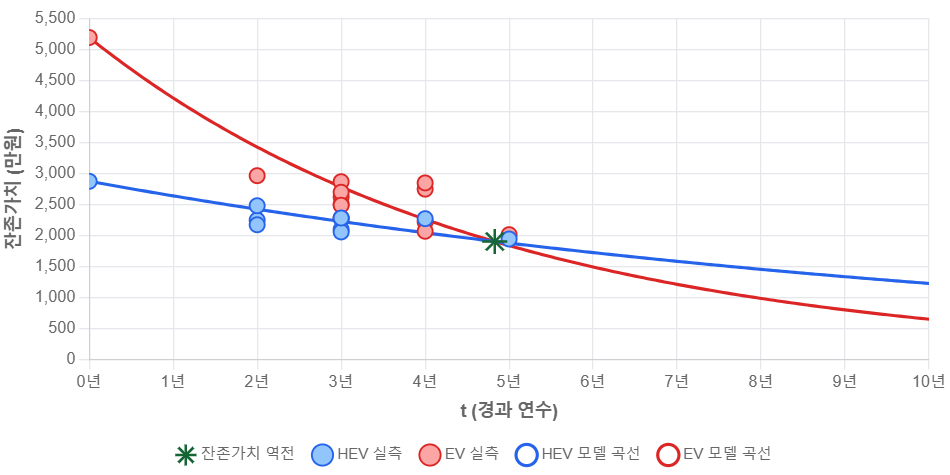
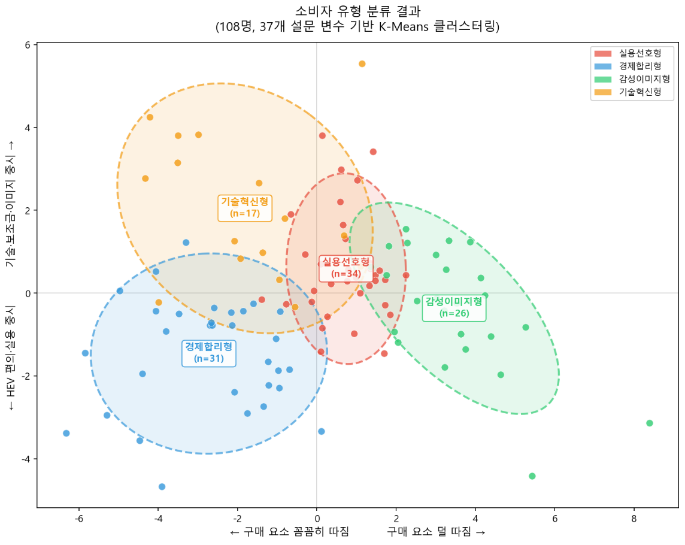
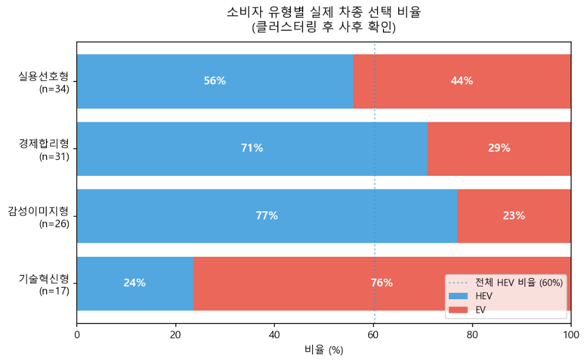

전기차 과연 경제적인가Is the EV Actually Economical?
하이브리드 및 전기차의 경제성 분석Economic Analysis of Hybrids and EVs
대현, 지영Daehyun, Jiyoung
전기차 과연 경제적인가(가제)- 하이브리드 및 전기차의 경제성 분석Is the EV Actually Economical? — Economic Analysis of Hybrids and EVs
4팀 양대현, 유지영Team 4 — Yang Daehyun, Yoo Jiyoung
1. 럭셔리 너머, 경제성이라는 저울1. Beyond Luxury — The Scale of Economics
앞선 글은 좋은 차의 기준이 럭셔리 경험, 즉, 감각으로 옮겨가는 과정을 따라갔다. 소비자가 차에서 사는 것은 단순한 마력이 아니라, 조명이 바뀌는 순간과 승차감, 향기가 번지는 찰나라는 이야기였다. 하지만 사람이 차를 고를 때, 차 안에서의 경험만 저울에 올리는 건 아니다. 그 반대편에는 늘 또 하나의 추, 돈이 놓인다. 우리가 이번에 들여다보기로 한 건 이 두 번째 저울, 경제성이다.The previous article traced the process by which the standard for a good car has shifted toward luxury experience — sensation. What consumers buy in a car is not mere horsepower but the moment the lighting changes, the ride quality, and the fleeting instant when fragrance diffuses. But when people choose a car, they do not place only the in-car experience on the scale. On the other side always sits another weight: money. What we decided to examine this time is this second scale — economics.
그 저울 위에 가장 빠르게 올라선 선택지는 전기차였다. 보조금으로 차값을 낮추고, 기름값보다 싼 충전비로 운행할 수 있다는 점에서 전기차는 더 경제적인 선택지로 받아들여졌다. 수치도 이를 증명하는 듯했다. 2026년 2월, 전기차 신규 등록(3만 5,766대)이 사상 처음으로 하이브리드(2만 9,112대)를 앞질렀다. 전기차 등록은 1년 전보다 170% 늘었고, 한동안 하이브리드가 우세하던 시장의 구도도 빠르게 흔들렸다. 전기차는 경제성이라는 요소 때문에 더 이상 낯선 선택지가 아니라, 오래된 주류의 자리를 넘보는 대안이 된 것이다.The option that rose fastest onto that scale was the EV. With subsidies lowering purchase prices and charging costs cheaper than gasoline, EVs were accepted as the more economical choice. The numbers seemed to prove it too. In February 2026, new EV registrations (35,766 units) surpassed hybrids (29,112 units) for the first time in history. EV registrations grew 170% year-over-year, and the market landscape in which hybrids had long been dominant was rapidly shaken. Because of the factor of economics, EVs were no longer an unfamiliar option — they had become an alternative vying for the place of the long-standing mainstream.
여기까지는 익숙한 이야기다. 전기차는 경제적이고, 그래서 전기차가 뜬 것이다. 사실 틀린 말도 아니다.So far this is a familiar story. EVs are economical, and that's why they took off. It's not actually wrong.
하지만 정말 그럴까.But is it really?
전기차가 경제적이라는 말은 닳도록 들었지만, 그 경제성을 끝까지 계산해본 사람은 드물다. 차의 경제성을 '구매 비용'으로 판단하는 건 절반짜리 계산이다. 차는 사는 순간 끝나는 물건이 아니라, 타다가 결국엔 되파는 자산이기 때문이다. 매달 아끼는 충전비가 눈에 보이는 돈이라면, 되팔 때 빠져나가는 자산 가치는 처분 전까지 수면 아래 잠겨 있는 돈이다. 사는 순간부터 파는 순간까지 들고 나는 돈을 모두 더한 값, 총소유비용(TCO)이야말로 진짜 저울이다.We have heard until it wore thin that EVs are economical — but few people have run the economics all the way to the end. Judging a car's economic value by its 'purchase cost' is a half-calculation. A car is not an item that ends the moment you buy it — it is an asset you drive and ultimately resell. If the charging costs saved each month are visible money, the asset value that drains away at resale is money submerged beneath the surface until disposal. The total of all money in and out from the moment of purchase to the moment of sale — Total Cost of Ownership (TCO) — is the real scale.
그래서 우리는 TCO 관점에서 전기차와 하이브리드차를 나란히 놓고, 두 가지 가설을 세워 경제성을 따져보기로 했다.So we placed EVs and hybrid cars side by side from a TCO perspective and set up two hypotheses to analyze economics.
가설 1. 전기차는 보조금과 낮은 충전비 덕분에 초기와 단기에는 하이브리드보다 경제적이다.Hypothesis 1. Thanks to subsidies and low charging costs, EVs are more economical than hybrids in the short term.
가설 2. 하이브리드는 낮은 감가상각률과 안정적인 잔존가치 덕분에, 오래 탈수록 전기차보다 경제적이다.Hypothesis 2. Thanks to a lower depreciation rate and stable residual value, hybrids become more economical than EVs the longer you hold them.
두 가설은 결국 한 지점에서 만난다. 단기에는 전기차가 유리하고, 장기에는 하이브리드가 유리하다면 두 선택의 우열이 뒤집히는 시점이 어딘가에 있어야 한다. 우리가 확인하고자 한 것도 바로 그 역전 시점이다.The two hypotheses ultimately meet at one point. If EVs are advantageous in the short run and hybrids in the long run, there must be somewhere a crossover point at which the relative advantage reverses. What we wanted to verify was precisely that crossover point.
이를 보기 위해 두 차종의 누적 총소유비용을 연도별로 계산했을 때, 다음과 같은 결과가 나왔다.To examine this, when we calculated the cumulative TCO of both vehicle types year by year, the following results emerged.

우리는 약 2년이 되는 시점에 hev가 ev보다 훨씬 경제적이라는 결론을 얻을 수 있었다. 이와 같은 결과가 도출된 이유를 함꼐 알아보자.We were able to reach the conclusion that at around the two-year mark, the HEV is significantly more economical than the EV. Let us explore together why this result was derived.
2. 숫자는 생각보다 드라마틱하다2. The Numbers Are More Dramatic Than You Think
차값보다 무서운 것, ‘차를 가지고 있을 때’의 비용What's Scarier Than the Car Price: The Cost of 'Owning a Car'
전기차가 정말 경제적인지 따지려면, 먼저 질문을 조금 바꿔야 한다.To properly examine whether EVs are truly economical, we first need to change the question slightly.
“얼마에 살 수 있는가”가 아니라, “끝까지 얼마가 드는가”로.Not “How much can I buy it for?” — but “How much will it cost me all the way through?”
차는 계산이 꽤 까다로운 물건이다. 살 때 돈이 들고, 탈 때 돈이 들고, 관리할 때 돈이 들고, 마지막에는 되팔 때 또 한 번 계산이 발생한다. 처음 지불한 가격표만 보고 경제성을 판단하기에는, 차 한 대의 생애가 생각보다 길고 복잡하다.A car is quite a tricky thing to calculate. It costs money when you buy it, costs money when you drive it, costs money when you maintain it, and finally one more calculation occurs when you resell it. To judge economics by the initial price tag alone, the life of a single car is longer and more complex than you might think.
그래서 필요한 개념이 TCO, 즉 총소유비용이다. 말 그대로 차를 사서 보유하고, 운행하고, 다시 처분하기까지 들어가는 전체 비용이다.That is why the concept of TCO — Total Cost of Ownership — is needed. Literally, it is the total cost of buying, holding, operating, and then disposing of a car.
TCO = 구입가 – 보조금 – 잔존가치 + 연료비 + 유지비TCO = Purchase Price – Subsidies – Residual Value + Fuel Costs + Maintenance Costs
이번 분석에서는 이 공식 안에 들어가는 주요 변수들을 하나씩 꺼내보기로 했다. 보조금, 연료비, 유지비, 그리고 감가상각이다.In this analysis, we chose to pull out the major variables inside this formula one by one: subsidies, fuel costs, maintenance costs, and depreciation.
보조금과 연료비는 비교적 눈에 잘 띈다. 전기차를 살 때 얼마를 지원받는지, 한 달 충전비가 얼마나 적게 나오는지는 소비자가 바로 체감할 수 있다. 문제는 감가상각이다. 감가상각은 조용하다. 매달 통장에서 빠져나가지도 않고, 카드 명세서에 찍히지도 않는다. 하지만 차를 되파는 순간, 그동안 숨어 있던 비용이 한꺼번에 모습을 드러낸다.Subsidies and fuel costs are relatively visible. How much subsidy you receive when buying an EV, how much lower the monthly charging bill comes out — consumers can feel these directly. The problem is depreciation. Depreciation is quiet. It does not come out of your account each month, does not appear on your credit card statement. But the moment you resell the car, the cost that had been hiding all along reveals itself all at once.
충전비가 ‘매달 아끼는 돈’이라면, 감가상각은 ‘나중에 사라져 있는 돈’이다.If charging costs are "money saved every month," depreciation is "money that will have vanished later."
그리고 자동차 경제성의 진짜 승부는 종종 후자에서 갈린다.And the true contest of automotive economics is often decided by the latter.
같은 출발선에 세우기: 니로 HEV와 니로 EVStarting on the Same Line: Niro HEV and Niro EV
공정한 비교를 위해 두 차량을 같은 출발선에 세웠다. 분석 대상은 2021년식 기아 니로 HEV와 니로 EV다. 같은 브랜드, 유사한 차급, 비슷한 플랫폼을 가진 차량이기 때문에 디자인 취향이나 브랜드 선호 같은 변수를 최대한 줄이고, 하이브리드와 전기차라는 구조적 차이에 집중할 수 있다.For a fair comparison, we placed two vehicles on the same starting line. The analysis targets are the 2021 Kia Niro HEV and Niro EV. Since they are vehicles with the same brand, similar segment, and comparable platform, we can minimize variables like design preference or brand loyalty and focus on the structural difference between hybrid and electric.
구분Category
설정 기준Setup Criteria
기준 연도Base Year
2021년2021
분석 차량Analysis Vehicles
2021년식 기아 니로 HEV / 니로 EV2021 Kia Niro HEV / Niro EV
주행거리 가정Mileage Assumption
연 15,000km15,000 km/year
기준 연도를 2021년으로 잡은 이유는 명확하다. 전기차 판매가 본격적으로 증가하기 시작한 시점이면서, 2026년 현재 기준으로 약 5년 차 차량의 중고차 가치 흐름을 확인할 수 있기 때문이다.The reason for choosing 2021 as the base year is clear. It was when EV sales started increasing in earnest, and as of 2026, we can observe the used car value trend for approximately 5-year-old vehicles.
순위Rank
모델명Model Name
코나 일렉트릭Kona Electric
포터Ⅱ 일렉트릭Porter II Electric
아이오닉5IONIQ 5
MODEL 3
니로 EVNiro EV
아이오닉 일렉트릭IONIQ Electric
봉고Ⅲ EVBongo III EV
CHEVROLET BOLT EV
EV6
MODEL Y
차량 선정 과정에서는 2021년 전기차 판매 상위 모델 중 하이브리드 모델과 비교 가능한 차종을 검토했다. 코나와 니로가 후보에 올랐지만, 2021년식 기준으로 비교 가능한 모델이 존재하는 니로를 최종 분석 대상으로 선택했다. 주행거리는 한국 승용차의 연평균 주행거리인 15,000km를 적용했다.In the vehicle selection process, we reviewed top-selling 2021 EV models that could be compared with a hybrid equivalent. Kona and Niro were candidates, but we ultimately selected the Niro as the final analysis target because comparable models exist for the 2021 model year. We applied the annual average driving distance of Korean passenger cars — 15,000km.
이제 무대는 마련됐다.남은 건 숫자들이 어디로 움직이는지 보는 일이다.The stage is now set. What remains is to watch where the numbers move.
잔존가치 분석Residual Value Analysis
데이터 수집Data Collection
TCO 분석의 첫 단추는 잔존가치였다. 차를 끝까지 계산하려면, 결국 그 차가 나중에 얼마에 팔리는지부터 알아야 했기 때문이다. 그래서 우리는 가장 먼저 중고차 가격 데이터를 모았다. 2026년 시세는 엔카, KB차차차, K CAR 세 플랫폼에서 확보했고, 공식 집계가 없는 구간은 온라인 시세 크롤링과 2차 자료 조사를 함께 돌려 표본을 메웠다. 다만 크롤링으로 끌어온 일부 수치는 이미 평균을 낸 가격이라, 표의 분석 건수에는 이런 평균값 기반의 데이터가 일부 섞여 있다는 점을 미리 밝혀 둔다.The first step of the TCO analysis was residual value. To calculate a car all the way to the end, we first needed to know how much it would sell for later. So we gathered used car price data first. 2026 market prices were obtained from three platforms — Encar, KB Chachacha, and K CAR — and for periods without official data, we supplemented the sample with online price crawling and secondary source research. However, we note upfront that some figures obtained through crawling are already averaged prices, so the analysis counts in the tables include some average-based data.
데이터를 수집한 이후에는 찾은 데이터의 수와 특성에 맞는 모델 설계를 진행하였다. 처음 설계를 진행할 당시에는 연도마다 달라지는 감가율의 특성을 고려하기 위해 각 시점의 기울기가 다르게 도출되는 방향으로 모델을 설계하려 했으나, 데이터 모수 부족으로 인한 모델 신뢰도 부족이라는 문제가 발생하여 해당 방식은 채택하지 못했다. 대신, 감가율이 매년 같은 비율로 하락할 것이라는 가정을 바탕으로 지수 감가 회귀를 메인 모델로 설정하였다. 메인 모델을 활용하여 감가율을 알아낸 다음에는 Bootstrap을 이용하여 불확실성을 처리하였다.After collecting the data, we designed a model suited to the quantity and characteristics of the data found. In initial design, we intended to model different slopes at each time point to account for the varying depreciation rates by year — but this approach was abandoned due to insufficient data sample size undermining model reliability. Instead, we established exponential depreciation regression as the main model, based on the assumption that depreciation rates would decline at the same ratio each year. After deriving the depreciation rates using the main model, we used Bootstrap to handle uncertainty.
본격적인 계산에 앞서, 출발점이 될 신차가부터 정해야 했다. TCO 산식에서 보조금은 따로 빼서 계산하기 때문에, 신차가는 보조금을 덜어내기 전의 명목 출고가로 잡았다. 트림별 가격을 평균 내어, 아래 표와 같이 각 차종의 신차가를 확정했다.Before formal calculation, we first had to establish the new car price as a starting point. Since subsidies are subtracted separately in the TCO formula, the new car price was set as the nominal factory price before deducting subsidies. Averaging prices across trims, we confirmed each model's new car price as shown in the table below.
트림Trim
HEV
EV
럭셔리Luxury
프레스티지Prestige
노블레스Noblesse
노블레스 스페셜Noblesse Special
평균 P0Average P0
잔존가치 역점 시점Residual Value Crossover Point
이렇게 정한 기준 위에서 분석을 진행했다. 그 결과 두 차종의 연간 감가율은 아래와 같이 갈렸다.We conducted analysis on this established basis. The result: the annual depreciation rates of the two vehicle types diverged as follows.
HEV
EV
구매가격Purchase Price
연간 감가율Annual Depreciation Rate

숫자와 표만 들여다봐서는, 두 차의 가치가 어디서 서로를 지나치는지 좀처럼 잡히지 않는다. 그 결정적인 교차의 순간을, 이제 한 장의 그래프로 눈에 담아 볼 차례다.Looking at numbers and tables alone, it is hard to pinpoint where the two cars pass each other in value. Now it is time to capture that decisive crossover moment in a single graph.
약 5년이 되는 시점, 두 곡선이 마침내 교차한다. 그때까지 앞서 있던 잔존가치의 순위가 뒤집히는 것이다. 데이터가 짚어 준 이 인상적인 변곡점을 일단 뒤에 두고, 이제 시야를 조금 더 넓혀 보려 한다. 중고차 가치와 맞닿아 있는 실제 운영 비용을 따져볼 차례다. 다음 장에서는 연비와 유지비, 그리고 보조금이라는 변수를 하나씩 펼쳐 본다.At around the five-year mark, the two curves finally intersect. The residual value ranking that had been ahead until then is reversed. Setting aside this impressive inflection point the data has identified, we now want to widen the view a little further. It is time to examine the actual operating costs connected to used car value. In the next section, we unfold the variables of fuel efficiency, maintenance costs, and subsidies one by one.
연비 & 보조금Fuel Efficiency & Subsidies
차를 굴리는 동안 가장 자주, 가장 또렷하게 손에 잡히는 비용은 역시 연료비다. 소비자가 매달 가장 민감하게 체감하는 이 항목부터 숫자로 풀어 보자. 연료비는 다음 산식으로 계산했다.The cost that is most frequently and most tangibly felt while operating a car is of course fuel cost. Let us work through numbers starting with this item that consumers feel most acutely each month. Fuel costs were calculated using the following formula.
니로 HEV 연간 유류비 = 연간 주행거리 ÷ 연비 × 해당 연도 휘발유 평균가격니로 EV 연간 충전비 = 연간 주행거리 ÷ 전비 × 해당 연도 충전요금Niro HEV Annual Fuel Cost = Annual Mileage ÷ Fuel Economy × Average Gasoline Price for the Year Niro EV Annual Charging Cost = Annual Mileage ÷ Electricity Efficiency × Charging Rate for the Year
연간 주행거리는 앞서 도입부에서 잡은 그대로 15,000km로 두었다. 차량 효율은 제조사가 공인한 복합연비와 복합전비를 기준으로 삼았고, 그렇게 정리한 수치는 아래와 같다.Annual mileage was kept at 15,000km as established in the introduction. Vehicle efficiency was based on manufacturer-certified combined fuel economy and combined electric efficiency, and the figures organized accordingly are as follows.
구분Category
차량Vehicle
적용 기준Applied Standard
분석용 고정값Fixed Value for Analysis
하이브리드Hybrid
2021 더 뉴 니로 HEV2021 The New Niro HEV
복합연비, 16인치 타이어 기준Combined fuel economy, 16-inch tire standard
19.5km/L
전기차EV
2021 니로 EV2021 Niro EV
복합전비, 일반 EV 기준Combined energy consumption, standard EV basis
5.3km/kWh
마지막으로 단가다. 휘발유 가격은 전국 주유소 보통휘발유 평균 판매가격을, 전기차 충전요금은 환경부 공공급속충전요금을 기준으로 적용했다. 이 모든 값을 산식에 넣어 계산한 연료비는 아래와 같다.Finally, unit prices. Gasoline prices are based on the nationwide average regular gasoline selling price at gas stations; EV charging rates are based on the Ministry of Environment public fast-charging rate. The fuel costs calculated by plugging all these values into the formula are as follows.
연도Year
휘발유 평균가격Average Gasoline Price
공공충전요금Public Charging Rate
니로 HEV 연간 유류비Niro HEV Annual Fuel Cost
니로 EV 연간 충전비 (100kW 미만)Niro EV Annual Charging Cost (under 100kW)
1,812.39원/L
303.4원/kWh
1,394,146원
858,679원
1,643.00원/L
324.4원/kWh
1,263,846원
918,113원
1,653.23원/L
324.4원/kWh
1,271,715원
918,113원
1,680.31원/L
324.4원/kWh
1,292,548원
918,113원
1,805.23원/L
324.4원/kWh
1,388,638원
918,113원
다음은 보조금이다. 2021년 당시 전기차 보조금은 국가가 주는 기본 보조금과 지자체가 얹어 주는 보조금으로 나뉘어 지급됐다. 니로 EV의 차주가 받을 수 있었던 보조금은 아래와 같았다.Next is subsidies. In 2021, EV subsidies were divided between the national government's base subsidy and the local government's added subsidy. The subsidies a Niro EV owner could receive were as follows.
구분Category
적용 기준Applied Standard
금액Amount
기본 국가 보조금Basic National Subsidy
니로 EV 기준Based on Niro EV
800만 원8,000,000 KRW
지자체 보조금Local Government Subsidy
서울시 기준Based on Seoul City
400만 원4,000,000 KRW
총 보조금Total Subsidy
국가 보조금 + 지자체 보조금National Subsidy + Local Government Subsidy
1,200만 원12,000,000 KRW
지자체 보조금은 서울시를 기준으로 잡아, 400만 원을 적용했다.The local government subsidy was based on Seoul City, applying 4,000,000 won.
유지비Maintenance Costs
TCO를 구성하는 마지막 조각, 유지비 차례다. 유지비를 이루는 항목은 셀 수 없이 많지만, 여기서는 가장 대표적인 두 가지, 세금과 소모품 비용에 초점을 맞춰 계산했다.The final piece composing TCO: maintenance costs. The items making up maintenance costs are countless, but here we focused the calculation on the two most representative ones — taxes and consumable costs.
먼저 HEV의 세금이다. 자동차에 붙는 세금은 자동차세와 지방교육세로 나뉜다. 자동차세는 배기량에 따라 cc당 세액이 매겨지는데, 니로 HEV는 배기량이 1,580cc라 cc당 140원이 적용된다. 이를 그대로 곱하면 아래와 같은 결과가 나온다.First, HEV taxes. Automotive taxes are divided into vehicle tax and local education tax. Vehicle tax is assessed per cc based on engine displacement; the Niro HEV's displacement is 1,580cc so 140 won per cc is applied. Multiplying this directly gives the following result.
자동차세= 1,580cc × 140원 = 221,200원Vehicle Tax = 1,580cc × 140 won = 221,200 won
지방교육세는 자동차세의 30%만큼 따라붙는다. 그 금액은 아래와 같다.Local education tax is added at 30% of the vehicle tax. That amount is as follows.
지방교육세 = 221,200원 × 30% = 66,360원Local Education Tax = 221,200 won × 30% = 66,360 won
둘을 더한 연세액은 아래와 같다.The annual tax amount combining the two is as follows.
연세액(차령 3년 미만) = 221,200 + 66,360 = 287,560원Annual Tax (vehicle age under 3 years) = 221,200 + 66,360 = 287,560 won
하지만 이 금액을 곧이곧대로 다 내는 것은 아니다. 차령에 따라 세금을 깎아 주는 제도가 있기 때문이다. 자동차세는 차령 3년차부터 매년 5%씩, 최대 50%까지 줄어든다. 다만 전기차는 이미 최저 정액이 적용되고 있어, 이 차령 경감 대상에서는 빠진다.However, this amount is not paid in full as-is. There is a system that reduces taxes based on vehicle age. Vehicle tax decreases by 5% per year starting from the 3rd year, up to a maximum of 50%. However, since EVs already have the minimum flat rate applied, they are excluded from this age-based reduction.
이 두 가지를 모두 반영한 5년간의 연도별 세액은 아래와 같다.The annual tax amounts for 5 years reflecting both of these are as follows.
연도Year
차령Vehicle Age
경감률Reduction Rate
경감 후 연세액Annual Tax After Reduction
연납 공제율Annual Payment Discount Rate
최종 납부액Final Payment Amount
1년차Year 1
287,560원
258,804원
2년차Year 2
287,560원
258,804원
3년차Year 3
273,182원
254,059원
4년차Year 4
258,804원
245,864원
5년차Year 5
244,426원
232,205원
5년 누적5-Year Total
1,249,736원
다음은 EV의 세금이다. 전기차는 배기량과 무관하게, 비영업용 승용 기준으로 연 100,000원의 정액 자동차세가 매겨진다. 여기에 지방교육세 30%(30,000원)를 더하면 연세액은 130,000원이다. 게다가 앞서 말했듯 전기차에는 차령에 따른 5% 경감도 적용되지 않는다. 이를 반영한 최종 납부액은 아래와 같다.Next are EV taxes. Regardless of engine displacement, a flat vehicle tax of 100,000 won per year is assessed on EVs based on non-commercial passenger car standards. Adding 30% local education tax (30,000 won) makes the annual tax 130,000 won. Moreover, as noted earlier, EVs are not subject to the 5% age-based reduction. The final payment amounts reflecting this are as follows.
연도Year
연세액 (본세 + 교육세)Annual Tax (Base Tax + Education Tax)
연납 공제율Annual Payment Discount Rate
최종 납부액Final Payment Amount
130,000원
117,000원
130,000원
117,000원
130,000원
120,900원
130,000원
123,500원
130,000원
123,500원
5년 누적5-Year Total
1,249,736원
두 표를 나란히 놓고 보면 분명하다. 세금만 따져도 5년 동안 HEV가 EV보다 약 60만 원을 더 내게 된다.Placing the two tables side by side makes it clear. Even looking only at taxes, the HEV pays approximately 600,000 won more than the EV over 5 years.
이제 소모품이다. 차를 타다 보면 갈아 줘야 하는 소모품은 한둘이 아니지만, 이번 분석의 초점은 어디까지나 하이브리드와 전기차의 구조적 차이가 빚어내는 경제성에 있다. 그래서 타이어나 와이퍼처럼 두 차종에 똑같이 들어가는 항목은 덜어내고, 파워트레인이 다르기 때문에 갈리는 고유 부품에만 집중했다. 기준 주행거리인 연 15,000km를 가정해, 매뉴얼상 정비 주기가 실제로 돌아오는 부품만 계산에 넣었다. 그렇게 추린 소모품과 비용은 아래 표와 같다.Now consumables. When driving a car, there is no shortage of consumables that need replacing, but the focus of this analysis is ultimately the economics created by the structural difference between hybrids and EVs. So we removed items that apply equally to both — like tires and wipers — and focused only on powertrain-specific parts. Assuming the benchmark annual mileage of 15,000km, we included in the calculation only parts whose manual maintenance intervals actually come due. The consumables and costs identified this way are as shown in the table below.
소모품Consumable
매뉴얼 권장 주기Manual Recommended Interval
회당 비용Cost per Service
75,000km
교체 횟수Replacement Count
누적 비용Cumulative Cost
비고Notes
엔진 오일 &점화 플러그Engine Oil & Spark Plugs
10,000km 또는 12개월10,000 km or 12 months
70,000원
7회7 times
490,000원
점화 플러그(이리듐 4본)Spark Plugs (Iridium, set of 4)
150,000km
80,000원
0회0 times
0원₩0
주기 도달 xInterval not reached
연료 필터Fuel Filter
고장 시 교체Replace when faulty
60,000원
0회0 times
0원₩0
정기 교체 불필요No regular replacement needed
엔진 에어클리너Engine Air Cleaner
15,000km
25,000원
5회5 times
125,000원
HSG 구동벨트HSG Drive Belt
105,000km 또는 48개월105,000 km or 48 months
150,000원
1회1 time
150,000원
엔진 냉각수Engine Coolant
200,000km 또는 10년200,000 km or 10 years
80,000원
0회0 times
0원₩0
주기 도달 xInterval not reached
DCT 미션오일DCT Transmission Oil
점검 항목(통상 60,000km)Inspection item (typically 60,000 km)
130,000원
1회1 time
130,000원
예방정비 권장Preventive maintenance recommended
5년 / 75,000km 합계5-year / 75,000 km total
895,000원
소모품Consumable
매뉴얼 권장 주기Manual Recommended Interval
회당 비용Cost per Service
75,000km
교체 횟수Replacement Count
누적 비용Cumulative Cost
비고Notes
감속기 오일Reducer Oil
통상 60,000km 점검Typically 60,000 km inspection
100,000원₩100,000
1회1 time
100,000원₩100,000
예방정비 권장Preventive maintenance recommended
저전도 냉각수Low-conductivity coolant
최초 200,000km 또는 10년First at 200,000 km or 10 years
120,000원₩120,000
0회0 times
0원₩0
주기 도달 xInterval not reached
5년 / 75,000km 합계5-year / 75,000 km total
100,000원₩100,000
두 표를 종합하면, 소모품에서는 EV가 약 80만 원을 아낀다. 여기서 흐름이 분명해진다. 앞선 감가상각 분석과 달리 연비도, 보조금도, 세금도, 소모품도 하나같이 EV의 손을 들어 주고 있다. 그렇다면 이 모든 것을 한자리에 모았을 때, 저울은 과연 어느 쪽으로 기울까. 바로 다음 장에서 확인해 보자.Combining the two tables, EVs save approximately 800,000 won on consumables. The trend becomes clear here. Unlike the earlier depreciation analysis, fuel efficiency, subsidies, taxes, and consumables all raise EVs' hand. So when all of this is gathered in one place, which way does the scale actually tip? Let's verify in the very next section.
TCO 분석 결과TCO Analysis Results
맨 처음 꺼냈던 TCO 공식을 다시 펼쳐 보자.Let us unfold again the TCO formula from the very beginning.
TCO = 구입가 – 보조금 − 잔존가치 + 연료비 + 유지비TCO = Purchase Price – Subsidies – Residual Value + Fuel Costs + Maintenance Costs
이제 지금까지 구한 값을 이 공식에 하나씩 끼워 넣어, 어느 시점에 TCO가 뒤집히는지 살펴볼 차례다. 다음은 HEV와 EV의 TCO를 이루는 핵심 요소를 정리한 것이다.Now it is time to plug the values obtained so far into this formula one by one and examine at what point TCO reverses. The following summarizes the key components making up HEV and EV TCO.
HEV
구입가Purchase Price
보조금Subsidy
잔존가치Residual Value
연간운영비Annual Operating Cost
TCO
EV
구입가Purchase Price
보조금Subsidy
잔존가치Residual Value
연간운영비Annual Operating Cost
TCO
앞서 구한 TCO를 바탕으로, HEV와 EV의 우열이 뒤집히는 그 지점을 짚어 보자.Based on the TCO calculated above, let us identify the point at which HEV and EV reverse in economic advantage.
연도Year
TCO EV
TCO HEV
차이 (EV-HEV)Difference (EV–HEV)
그리고 계산의 끝에서, 꽤 흥미로운 장면이 펼쳐졌다. 약 2년이 되는 시점부터, HEV는 EV보다 확연히 경제적인 선택지로 나타난 것이다. 이유는 결국 잔존가치였다. 더 비싼 값을 치르고 산 전기차가 가파른 감가율 탓에 제 자산 가치를 지켜 내지 못했고, 그만큼 차를 굴리는 데 드는 실질 비용이 HEV를 넘어선 것이다. 결국 해가 거듭될수록, EV 보유자는 자기도 모르는 사이 더 무거운 비용을 떠안고 있던 셈이다.And at the end of the calculation, quite an interesting scene unfolded. From around the two-year mark, the HEV appeared clearly as the more economical choice than the EV. The reason was ultimately residual value. The EV purchased at a higher price failed to preserve its asset value due to a steep depreciation rate, and by that margin its actual cost of operation exceeded the HEV. In the end, as the years accumulated, EV owners were unknowingly shouldering a heavier cost burden.
3. 본론 23. Main Analysis: Part 2
소비자 유형 클러스터링Consumer Type Clustering
본론의 TCO 분석은 5년 보유 기준 하이브리드(HEV)가 전기차(EV)보다 경제적이라는 결론을 도출했다. 그러나 이 결론은 ‘소비자가 이 모든 비용을 계산하고 차를 산다’는 가정 위에 성립한다. 본 분석은 그 가정을 검증하기 위해, 실제 구매자들이 어떤 기준으로 차를 선택했는지를 데이터로 확인했다.The main body's TCO analysis concluded that hybrid (HEV) is more economical than electric vehicle (EV) based on 5-year ownership. However, this conclusion rests on the assumption that 'consumers calculate all these costs before buying a car.' This analysis verified that assumption by examining what criteria actual buyers used to choose their car.
대상은 HEV/EV 구매자 108명(HEV 65명, EV 43명)이다. 핵심 질문은 두 가지다. 첫째, 소비자들은 실제로 어떤 기준으로 차를 골랐는가. 둘째, 경제성을 따진 사람들이 정말 HEV를 선택했는가.The subjects are 108 HEV/EV buyers (65 HEV, 43 EV). There are two core questions. First: what criteria did consumers actually use to choose their cars? Second: did people who considered economics really choose the HEV?
분석의 핵심 원칙은 차종 정보를 분류 과정에서 완전히 배제하는 것이다. 구매 성향만으로 먼저 소비자 군집을 형성한 뒤, 각 군집이 실제로 어떤 차를 선택했는지를 사후에 대응시켰다. 이렇게 해야 특정 구매 성향이 어떤 차종 선택으로 이어지는지를 객관적으로 검증할 수 있다.The core principle of the analysis is to completely exclude vehicle type information from the classification process. Consumer clusters were first formed using purchase tendencies alone, then each cluster was matched post-hoc with what vehicle type they actually chose. Only this way can we objectively verify what vehicle choice a specific purchase tendency leads to.
분석 방법Analysis Method
데이터: 108명 설문 (HEV/EV 차종 보유자)Data: Survey of 108 respondents (HEV/EV owners)
차원 축소: FAMD(숫자형과 범주형 데이터를 하나의 좌표 공간으로 함께 압축하는 기법)로 주성분 추출Dimensionality Reduction: Principal component extraction via FAMD (a technique compressing numerical and categorical data together into a single coordinate space)
군집화: K-Means(K=4). 군집 수는 Elbow Method, Silhouette Score, 덴드로그램 세 지표가 K=4를 지지하여 확정Clustering: K-Means (K=4). The number of clusters was confirmed as K=4 based on support from three indicators — Elbow Method, Silhouette Score, and Dendrogram.
K
관성 (Inertia)Inertia
관성 감소폭Inertia Drop
실루엣 점수Silhouette Score
비고Notes
—
실루엣 최고, 그러나 2개 군집은 세분화로 과도하게 단순Highest silhouette, but 2 clusters are overly simple for segmentation
−188.7
−140.9
← 최종 선택← Final Selection
−116.4
이후 감소폭 둔화 구간Drop slowdown zone after this
−91.5
−83.9
사후 확인: 군집 확정 후 HEV/EV 비율 교차분석 + 카이제곱 검정Post-hoc Verification: Cross-analysis of HEV/EV ratios after cluster confirmation + chi-square test
설문 데이터에는 1~5점 척도(숫자형)와 “가장 중요하게 생각한 요소는?” 같은 선택형 항목(범주형)이 혼재되어 있어, 두 유형을 동시에 처리할 수 있는 FAMD를 차원 축소 기법으로 사용했다.The survey data contained a mix of 1–5 point scales (numeric) and multiple-choice items (categorical) like "What factor did you consider most important?" — so FAMD, which can handle both types simultaneously, was used as the dimensionality reduction technique.
소비자 유형Consumer Types
차종 정보를 배제한 채 구매 태도만으로 분류한 결과, 소비자는 네 유형으로 나뉘었다.When classified by purchase attitude alone, excluding vehicle type information, consumers divided into four types.

실용선호형 (34명, 31.5%) — 경제 요소는 중간 수준으로만 고려하고, 주행감·승차감·실용성을 우선하는 유형. 가격과 연비를 무시하지는 않으나, 최종 판단 기준은 실용적 만족도에 가깝다.Practical-Preference Type (34 people, 31.5%) — Considers economic factors only moderately, prioritizing driving feel, ride quality, and practicality. Does not ignore price and fuel efficiency, but final judgment criteria lean toward practical satisfaction.
경제합리형 (31명, 28.7%) — 차량 가격과 연비/충전비를 가장 꼼꼼히 따지고, 보조금과 잔존가치까지 두루 고려하는 유형. 서론에서 전제한 ‘합리적 소비자’에 해당한다.Economic Rationalist (31 people, 28.7%) — The type that most carefully weighs vehicle price and fuel/charging costs, broadly considering subsidies and residual value as well. Corresponds to the 'rational consumer' assumed in the introduction.
감성이미지형 (26명, 24.1%) — 경제 계산보다 친환경 이미지와 감성을 앞세우는 유형. 가격·연비·보조금 등 거의 모든 경제 지표에서 중요도가 가장 낮다.Emotional-Image Type (26 people, 24.1%) — Prioritizes eco-friendly image and emotional appeal over economic calculation. Rates the lowest importance across nearly all economic indicators — price, fuel efficiency, subsidies.
기술혁신형 (17명, 15.7%) — 보조금·최신 기술·브랜드 이미지를 최우선하는 유형. 잔존가치와 친환경 이미지에 대한 민감도 역시 네 유형 중 가장 높아, 정책과 신기술에 민감하게 반응한다.Tech-Innovation Type (17 people, 15.7%) — Prioritizes subsidies, latest technology, and brand image above all. Also has the highest sensitivity to residual value and eco-friendly image among the four types, responding acutely to policy and new technology.
비용을 꼼꼼히 따지는 경제합리형은 전체의 28.7%에 불과했다. 나머지 71.3%는 경제성 외의 요소로 차를 선택했다는 의미다. 네 유형의 인원 분포는 비교적 고르게 나타나, 특정 유형이 시장을 압도하지는 않았다.The Economic-Rational Type who carefully calculates costs was only 28.7% of the total. This means the remaining 71.3% chose their car based on factors other than economics. The distribution across the four types was relatively even — no particular type dominated the market.
차종 선택 비율Vehicle Type Selection Ratio
분류 완료 후, 각 유형이 실제로 선택한 차종을 대응시켰다.After classification, each type was matched with the vehicle type they actually chose.

유형Type
인원Count
HEV
HEV%
EV
EV%
실용선호형Practical Preference
34명34
19명19
15명15
경제합리형Economic Rationalist
31명31
22명22
9명9
감성이미지형Emotional Image
26명26
20명20
6명6
기술혁신형Tech Innovator
17명17
4명4
13명13
군집 유형과 차종 선택의 연관성을 카이제곱 검정(두 범주형 변수 사이의 관계가 우연인지 검증하는 통계 기법)으로 분석한 결과 χ²=14.34, p=0.0025로 나타났다. p값이 0.01보다 작아, 구매 태도 유형과 차종 선택 사이에는 우연으로 보기 어려운 통계적 연관성이 확인됐다.Analyzing the relationship between cluster type and vehicle type selection via chi-square test (a statistical technique verifying whether the relationship between two categorical variables is coincidental), the result was χ²=14.34, p=0.0025. With the p-value below 0.01, a statistical association that is difficult to attribute to coincidence was confirmed between purchase attitude type and vehicle type selection.
주목할 점은 두 가지다. 경제합리형이 HEV를 71% 선택한 것은 TCO 분석 결과와 일치한다. 반면 EV는 보조금·최신 기술을 중시하는 기술혁신형(EV 77%)에 집중됐는데, 이 선택은 정책 환경에 강하게 의존한다.There are two notable points. The 71% HEV selection rate among the Economic-Rational Type aligns with the TCO analysis results. In contrast, EVs were concentrated in the Tech-Innovation Type (EV 77%), which values subsidies and latest technology — a choice that strongly depends on the policy environment.
결론: 경제성은 숫자로 시작하지만, 선택은 사람마다 달라진다Conclusion: Economics Begins with Numbers, but Choices Differ by Person
A. 저울은 하이브리드 쪽으로 기울었다A. The Scale Has Tipped Toward Hybrid
초기 계산은 전기차의 편이었다. 보조금은 구매 가격을 낮췄고, 충전비는 운행 비용을 가볍게 만들었다. 차를 사는 순간과 굴리는 초반만 놓고 보면, 전기차는 분명 경제적인 선택처럼 보였다.The initial calculation favored the EV. Subsidies lowered the purchase price, and charging costs lightened operating expenses. Looking only at the moment of purchase and the early period of driving, the EV clearly seemed like the economical choice.
하지만 총소유비용의 계산은 거기서 끝나지 않았다. 시간이 지나며 전기차의 낮은 충전비와 유지비는 장점으로 남았지만, 더 크게 움직인 변수는 잔존가치였다. 감가상각까지 포함하자 두 차의 비용 구조는 예상보다 빠르게 뒤집혔다. 분석 결과, 전기차와 하이브리드의 총소유비용이 역전되는 시점은 약 2년 차였다. 이후 장기 보유 구간에서는 낮은 감가상각률과 안정적인 잔존가치를 가진 하이브리드가 경제적으로 더 유리했다.But the TCO calculation did not end there. Over time, the EV's lower charging and maintenance costs remained advantages, but the variable that moved more significantly was residual value. Once depreciation was included, the two cars' cost structures reversed faster than expected. The analysis result: the crossover point where EV and hybrid TCO reverse is around year two. In the long-term holding period thereafter, the hybrid — with its lower depreciation rate and stable residual value — was economically more advantageous.
다만 이 결론을 곧바로 “하이브리드가 정답”이라고 읽기는 어렵다. 클러스터링 분석에서 경제성을 실제로 따져 차를 사는 경제합리형은 전체의 28.7%에 그쳤다. 나머지 다수는 주행감, 이미지, 기술, 편의성처럼 숫자 밖의 이유를 함께 고려했다. 결국 경제성은 중요한 기준이지만, 소비자가 차를 고르는 유일한 기준은 아니었다.However, it is difficult to read this conclusion directly as "hybrid is the right answer." In the clustering analysis, the Economic Rationalist type — those who actually weigh economics when buying a car — accounted for only 28.7% of the total. The remaining majority also considered reasons outside the numbers, like driving feel, image, technology, and convenience. Ultimately, economics is an important criterion, but it was not the only criterion consumers use to choose a car.
B. 답은 차종이 아니라 조건에 있다B. The Answer Lies in Conditions, Not Vehicle Type
같은 역전 시점을 두고도 선택은 달라질 수 있다. 짧게 타고 바꿀 계획이라면 전기차의 초기 혜택이 매력적일 수 있고, 오래 탈수록 손해를 줄이고 싶다면 하이브리드가 더 안정적인 선택에 가깝다.Even with the same crossover point, choices can differ. If you plan to drive briefly and switch, the EV's early benefits may be attractive; if you want to minimize losses the longer you hold, the hybrid is closer to the more stable choice.
여기에 충전 환경, 보조금 수혜 여부, 중고차 가치에 대한 민감도, 최신 기술에 대한 선호가 더해지면 답은 다시 갈린다. 전기차를 고르는 일이 반드시 틀린 선택은 아니다. 다만 그것이 언제나 가장 경제적인 선택은 아닐 수 있다. 반대로 하이브리드는 감각적으로 새롭지는 않더라도, 장기 보유의 계산에서는 더 단단한 선택이 될 수 있다.When you add charging environment, subsidy eligibility, sensitivity to used car value, and preference for latest technology, the answer splits again. Choosing an EV is not necessarily a wrong choice. It is just that it may not always be the most economical choice. Conversely, while the hybrid may not feel sensuously new, in the long-term holding calculation it can be the more solid choice.
결국 중요한 것은 “어느 차가 더 좋은가”가 아니라 “내 조건에서는 어느 차가 더 맞는가”다. 경제성은 차를 고르는 출발점이지 종착점은 아니다. 내가 무엇을 얻고, 무엇을 감수하는지 알고 고를 때 선택은 조금 더 현명해진다.What ultimately matters is not "which car is better?" but "which car is right for my conditions?" Economics is a starting point for choosing a car, not a final destination. When you choose knowing what you gain and what you accept, the choice becomes a little wiser.